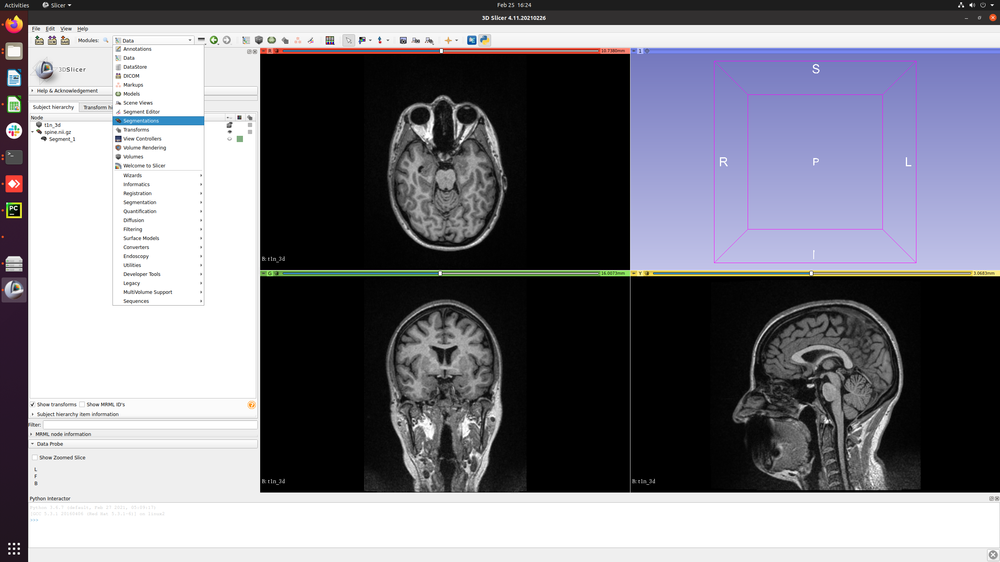
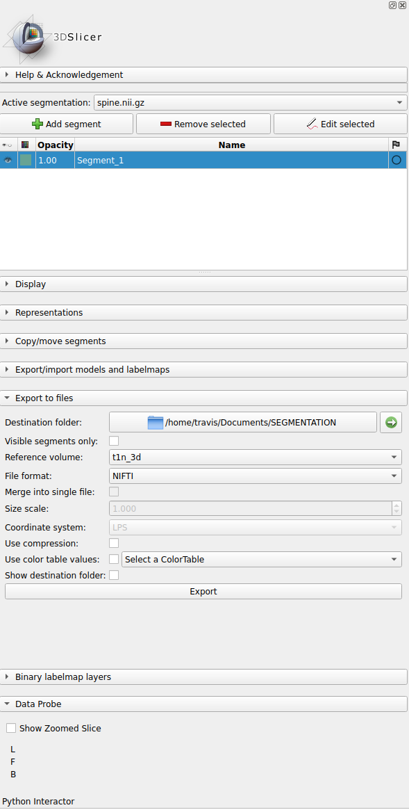
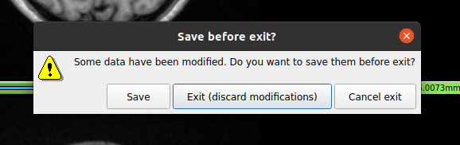

After editing a segmentation in slicer, one must save it according to the following steps.
1. On 'modules' click on 'Segmentations'.

First step.
2. On the 'Export to files' section, make sure the following are true:
- 'Destination folder' points to '/Documents/SEGMENTATION'
- Visible segments only is NOT checked
- Reference volume is NOT None
- File format is NIFTI

Second step.
3. Click on Export. After that you may exit the program normally by choosing "Exit (discard modifications)"

Third step.